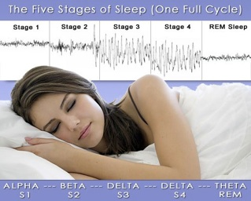

Cada noche, cuando duermes, el cerebro pasa a través de 5 estados distintos, que completan un ciclo. Este ciclo dura entre 90 y 110 minutos. Por lo tanto, en un descanso de 8 horas, haremos cinco ciclos enteros.

Aquí vemos los cinco estadios de cada ciclo:
Estadios 1 y 2: Sueño ligero, fácil despertar, pérdida de tono muscular y ausencia de sueños.
Estadios 3 y 4: Sueño profundo, reparación de tejidos, despertar confuso y sueños simples sin estructura narrativa.
Atonía del estado REM
La atonía del estado REM o parálisis del sueño es un mecanismo fisiológico que tiene el cuerpo para evitar que actuemos nuestro sueños; los músculos se quedan sin tono, cuesta que se muevan. De esta forma, se evita que movamos nuestro cuerpo mientras soñamos.
Sin embargo, en extrañas ocasiones nos despertamos y este mecanismo de inmovilización no se retira. Lo que sucede es que intentamos movernos pero el cuerpo no responde, suele durar unos pocos segundos o minutos. Para solucionarlo, aceleraremos la respiración conscientemente, pues así empezamos a activar nuevamente los músculos. La parálisis del sueño puede ser una experiencia aterradora si se desconoce su origen, se cree que los relatos de íncubos y otros seres que te paralizaban y poseían durante la noche no son más que delirios ocasionados por la sensación de parálisis. Sin embargo, si sabemos que se trata de un fenómeno inocuo podemos hacerle frente sin más problema.

Estadio REM: Se producen la mayoría de los sueños, así como los lúcidos. El tiempo que pasamos en REM aumenta a medida que avanza la noche, es decir, los sueños son más largos hacia el final de la noche. Por ello para tener sueños lúcidos es importante dormir 8 horas o más para pasar más tiempo en REM.